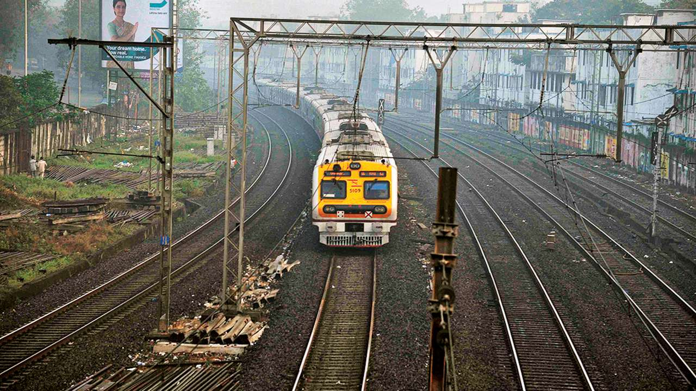

Mumbai Suburban Railway Classification using Location Data
Full Notebook and repo available.
Introduction
Carrying over 7.5 million passengers daily, the Mumbai Suburban Railway is the world's second-busiest rapid transit system. It operates about 2500 daily services and serves a region spread over 300 kilometers.
For this project, we will analyze location data of about 130 stations constituting the suburban rail network. We will look at the areas surrounding the stations and classify them based on how well they're served.
Businesses and city planners can then use the results to plan their future course of action.
Data
Station Data
For this project, we will need a list of all the stations in the Mumbai Suburban Railway. We'll get this data directly from Wikipedia.
Station Location Data
Location Data is unfortunately not a part of the wiki table. Hence we use geopy to fetch the latitudes and longitudes for each station.
Venue Categories
Venue types around each station in a 1000m radius using Foursquare API. Foursquare gives the below mentioned venue categories:
- Arts & Entertainment (4d4b7104d754a06370d81259)
- College & University (4d4b7105d754a06372d81259)
- Event (4d4b7105d754a06373d81259)
- Food (4d4b7105d754a06374d81259)
- Nightlife Spot (4d4b7105d754a06376d81259)
- Outdoors & Recreation (4d4b7105d754a06377d81259)
- Professional & Other Places (4d4b7105d754a06375d81259)
- Residence (4e67e38e036454776db1fb3a)
- Shop & Service (4d4b7105d754a06378d81259)
- Travel & Transport (4d4b7105d754a06379d81259)
Let's visualize the stations on a map
Methodology
API Request
We use the below Foursquare API to get the venus around a station.
GET https://api.foursquare.com/v2/venues/explore?client_id={{CLIENT ID}}&client_secret={{CLIENT SECRET}}&v={{VERSION}}&ll={{LATITUDE}},{{LONGITUDE}}&radius={{RADIUS}}&categoryId={{CATEGORY ID}}
The response of the above query is like:
{"meta":{"code":200,"requestId":"5e62346f71c428001be098eb"},"response":{"warning":{"text":"There aren't a lot of results near you. Try something more general, reset your filters, or expand the search area."},"headerLocation":"Thāne","headerFullLocation":"Thāne","headerLocationGranularity":"city","query":"arts entertainment","totalResults":0,"suggestedBounds":{"ne":{"lat":19.16825000900001,"lng":73.00801996144735},"sw":{"lat":19.150249990999992,"lng":72.98900003855265}},"groups":[{"type":"Recommended Places","name":"recommended","items":[]}]}}
The total number of venues in each category can then be added to our data frame.
Exploratory Analysis
Let's see how the venue categories fare against each other in a bar chart.
Clustering
We can use a different number of clusters based on the urban/semi-urban divide, distance from major highways and airports, etc. In this project, we'll use 4 clusters. 5 or more clusters become difficult to interpret.
After applying K-means clustering, let's see how the venue categories are clustered.

As we can clearly see in the above bar graphs, cluster 0 seems to be the least developed parts of the city. Cluster 3 seems to be the most developed but a commercial part of the city. And the clusters 1 and 2 somewhat fall in the middle with minor differences.
Cluster Maps
Map of Stations based on absolute clusters:
Map of Stations based on normalized clusters:
Conclusion
The cluster can show how developed different parts of the city are. They can also show where new businesses should target so as to earn better profits.
However, just Foursquare location data can never be enough for this level of analysis. Compared to other major cities in the world, Mumbai still does not show all the venues in a particular location. Also, a large restaurant may attract almost 10x crowd as much as a small shanty tea stall. But Foursquare will show both as 1 location. Hence, we might need more data like demographics, rent prices, median incomes, etc. to get a better overview.